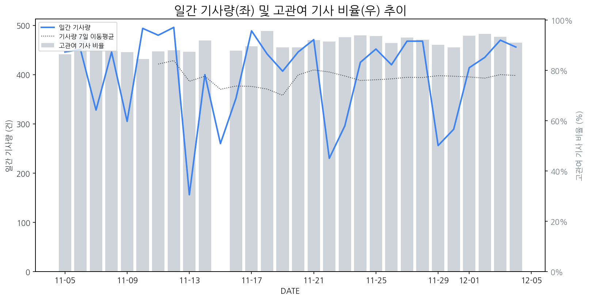

1
시장 활동 지표
기사량 추세 & 이상 징후 탐지
시장의 '전체 기사량'이 평소보다 비정상적으로 급증했는지(Spike)를 차트로 확인하고, LLM이 분석한 급등의 핵심 원인을 파악할 수 있음

고관여 기사란? 산업 연관 키워드로 수집된 기사들 중 디스플레이 키워드에 가중치를 반영하여 도출된 관련성 높은 기사
수집된 기사 수 (2025-12-04)
456
-3% WoW
기사량 변동 수준 (7일 이동평균 대비)
±6.7% 이하
2
오늘의 키워드
급격한 관심 ↑, 주목해야 할 키워드
1
노트북
+5.2σ
AI 기능 강화 및 휴대성과 성능을 갖춘 신형 노트북 출시와 관련해 소비자 관심이 집중되었습니다.
Related Metrics
금일 언급량: 22, 전일 대비: +17
Interpretation
노트북 수요 증가, 디스플레이 시장 긍정적
Next Step
'노트북' 관련 상세 기사 및 경쟁사 반응 모니터링
2
삼성디스플레이
+3.7σ
QD-OLED 기술 우수성 인정받으며 대한민국 기술대상 수상 소식이 급증 이끌었습니다.
Related Metrics
금일 언급량: 21, 전일 대비: +19
Interpretation
기술 리더십 강화
Next Step
핵심 토픽 'OLED_Topic' 관련 신호입니다. 3번 섹션(키워드 감성분석)에서 해당 토픽의 감성 변동을 교차 확인하세요.
3
메타
+3.0σ
메타가 메타버스 사업 축소 및 AI 투자 집중으로 전환하며 관련 산업 투자 재편에 나섰습니다.
Related Metrics
금일 언급량: 7, 전일 대비: +7
Interpretation
AR/VR 디스플레이 수요 감소 가능성.
Next Step
핵심 토픽 'XR_Device_Topic' 관련 신호입니다. 3번 섹션(키워드 감성분석)에서 해당 토픽의 감성 변동을 교차 확인하세요.
4
oled
+2.1σ
삼성디스플레이 QD-OLED가 대한민국 기술대상 수상하며 기술력 및 시장 관심 증대.
Related Metrics
금일 언급량: 19, 전일 대비: +12
Interpretation
OLED 기술 리더십 강화
Next Step
핵심 토픽 'OLED_Topic' 관련 신호입니다. 3번 섹션(키워드 감성분석)에서 해당 토픽의 감성 변동을 교차 확인하세요.
3
실시간 Risk 키워드
경계해야 할 시그널 탐지
특정 토픽의 부정 감성 점수가 급등할 때 이를 즉시 탐지하고, "근거 기사" 링크를 통해 리스크의 실체를 빠르게 파악할 수 있음
키워드 분석 결과, 오늘은 걱정할 만한 하락 신호가 없습니다. (부정 언급량 변화: +1.5σ 이내)
4
주요 이벤트 모니터링
실시간 산업 동향 파악을 위한 주요 활동
최근 발생한 주요 기업들의 신제품 출시, 투자 등 주요 이벤트를 제공하여 매일 경쟁사 동향을 확인할 수 있음
노태문 삼성전자 사장이 '미스터 폴더블'에서 '미스터 AI'로 변화를 모색하며 회사의 사업 방향 전환을 시사했습니다. 이는 삼성전자가 기존 강점을 가졌던 폴더블 디스플레이 시장에서의 영향력 유지와 더불어 AI 기술을 중심으로 한 새로운 성장 동력 확보에 나설 것임을 의미합니다.
Impact
폴더블 디스플레이 시장에서의 경쟁 구도에 직접적인 영향은 크지 않으나, 삼성전자의 AI 기술 투자는 향후 디스플레이 패널에 AI 기능이 통합되거나 AI 기반의 새로운 디스플레이 폼팩터 개발을 촉진할 수 있습니다.
Next Step
AI 통합 디스플레이 솔루션 개발 역량을 강화하고, AI 기반의 스마트 디스플레이 시장 트렌드에 선제적으로 대응할 수 있는 기술 로드맵을 수립해야 합니다.
삼성디스플레이의 퀀텀닷-OLED(QD-OLED) 디스플레이가 대한민국 기술대상에서 수상했다. 이는 QD-OLED 기술의 우수성을 공식적으로 인정받은 결과이다.
Impact
삼성디스플레이의 QD-OLED 기술력 부각은 프리미엄 디스플레이 시장에서의 경쟁을 심화시키고, OLED 기술 발전을 가속화할 것으로 예상된다.
Next Step
타사 디스플레이 제조 기업은 QD-OLED의 장점을 분석하고, 자사 기술과의 차별화 전략 또는 새로운 기술 개발 방향을 모색해야 한다.
수소차 관련주들이 봄꽃처럼 피어나는가 싶었지만, 유일에너테크, SJG세종, 현대차 등 일부 종목은 좋은 흐름을 보이고 있는 반면 전반적으로는 시들한 모습을 보이고 있습니다. 이는 수소차 시장의 성장 기대감과 실제 성과 간의 괴리를 시사합니다.
Impact
수소차 시장의 더딘 성장 또는 불확실성 증가는 디스플레이 산업에서 차량용 디스플레이 수요에도 단기적으로 부정적인 영향을 미칠 수 있습니다.
Next Step
수소차 중심의 차량용 디스플레이 기술 개발 및 투자보다는, 전기차 등 전반적인 친환경차 시장의 성장 추세를 면밀히 모니터링하며 수요 다변화 전략을 고려해야 합니다.
XR 헤드셋 시장이 올해 1천만대 이상의 출하량을 기록할 것으로 전망됩니다. 이는 XR 기기 시장의 성장세를 가속화하는 중요한 지표입니다.
Impact
XR 헤드셋 시장 확대는 고해상도, 고성능 디스플레이 패널에 대한 수요 증가로 이어져 관련 디스플레이 기술 개발 및 생산 확대 경쟁을 촉진할 것입니다.
Next Step
디스플레이 제조 기업은 XR 헤드셋에 최적화된 경량, 고해상도, 고주사율 디스플레이 기술 개발에 집중하고, 잠재적 수요 증가에 대비한 생산 능력 확보를 검토해야 합니다.
HPE와 에임드에서 새로운 소식이 발표되었으며, 이는 ICT 산업 전반에 걸쳐 영향을 미칠 것으로 예상됩니다. 구체적인 내용은 기사 본문을 통해 확인해야 합니다.
Impact
이벤트의 구체적인 내용에 따라 관련 부품 공급망, 신규 기술 도입, 또는 시장 경쟁 구도에 영향을 줄 수 있습니다.
Next Step
관련 업계 동향을 면밀히 모니터링하고, HPE 및 에임드의 사업 방향 변화가 디스플레이 기술 로드맵이나 협력 기회에 미칠 영향을 신속하게 파악해야 합니다.
5
지금 주목해야 할 뉴스 TOP 3
LGD, OLED 국산화율 73%… 中 BOE·CSOT 추격 속 ‘공급망 방어막’ 구축...
로컬 요약 모델 실행 중 오류 발생: 제목을 클릭하여 기사 전문을 확인할 수 있습니다.
애플, 아이폰17 판매 급증에 주가 286달러 사상 최고치...14년 만에 삼성...
로컬 요약 모델 실행 중 오류 발생: 제목을 클릭하여 기사 전문을 확인할 수 있습니다.
기회 모색도 주도권 강화도 '쏠쏠'…ICT 업계, 행사 활용 다변화
로컬 요약 모델 실행 중 오류 발생: 제목을 클릭하여 기사 전문을 확인할 수 있습니다.